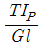
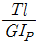
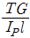
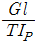
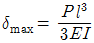
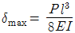
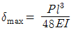
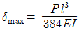

자동차정비산업기사 (2016-03-06 기출문제)
1과목: 일반기계공학
1. 탄소강에 관한 설명으로 옳지 않은 것은?
- 탄소량이 증가하면 비중도 증가한다.
- 탄소강의 탄성율은 온도가 증가함에 따라 감소한다.
- 탄소강은 200~300℃에서 청열 취성(메짐)이 발생한다.
- 아공석강 영역에서 탄소량이 증가하면 경도는 증가하나, 연신율은 감소한다.
(정답률: 54%)

2. 성크 키의 길이가 200 mm, 키의 측면에 발생하는 전단력이 80 kN이고, 키 폭은 높이의 1.5배라고 하면 키의 허용전단응력이 20 MPa 일 경우 키 높이는 약 몇 mm 이상으로 하면 되는가?
- 13.33
- 18.⑤
- 25.42
- 30.06
(정답률: 36%)
3. 양단에 베어링으로 지지되어 있으며 그 중앙에 회전체 1개를 가진 원형 단면 축에 대한 위험속도의 계산에 필요한 설계인자로서 가장 거리가 먼 것은?
- 축의 길이
- 전단탄성계수
- 회전체의 무게
- 축의 단면 2차 모멘트
(정답률: 59%)
4. 두랄루민은 알루미늄에 무엇을 첨가한 합금인가?
- 구리, 마그네슘, 주석
- 구리, 마그네슘, 망간
- 주석, 마그네슘, 철
- 주석, 마그네슘, 아연
(정답률: 79%)
5. 축에 작용하는 비틀림모멘트를 T, 전단탄성계수를 G, 극관성모멘트를 IP, 길이를 l(엘) 이라 할 때, 전체 비틀림각은?




(정답률: 68%)
6. 공작물을 회전시키고, 공구는 직선운동으로 공작물을 가공하는 공작 기계는?
- 드릴
- 밀링
- 연삭
- 선반
(정답률: 69%)
7. 2개의 축이 같은 평면 내에 있으면서 그 중심선이 30° 이내의 각도로 교차하는 경우의 축 이음으로 가장 적합한 것은?
- 고정 커플링(fixed coupling)
- 올덤 커플링(Oldham's coupling)
- 플렉시블 커플링(flexible coupling)
- 유니버설 커플링(universal coupling)
(정답률: 60%)
8. 길이 300 mm 인 구리봉 양단을 고정하고 20℃에서 70℃로 가열하였을 때 열응력에 의해 발생되는 압축응력[N/mm2]은? (단, 구리봉의 세로탄성계수는 9.2×103 N/mm2, 선팽창계수(α)는 1.6×10-3/℃ 이다.)
- 6.28
- 7.36
- 8.39
- 10.2
(정답률: 51%)
9. 아공석강에서는 Ac3점에서 40~60℃ 높은 범위에서 가열하여 노내에서 서냉시키는 방법으로 주로 가공 경화된 재료를 연화시키거나 내부응력 제거 및 불순물의 방출 등을 할 수 있는 열처리 방법은?
- 불림(normalizing)
- 뜨임(tempering)
- 담금질(quenching)
- 풀림(annealing)
(정답률: 63%)
10. 다음 중 언더컷에 대한 설명으로 옳은 것은?
- 과잉의 용융금속이 용착부 밖으로 덮인 비드의 상태를 말한다.
- 용접 중에 용착 금속 내에 녹아 들어간 슬래그가 용착 금속 내에 혼입되어 있는 결함을 말한다.
- 용착 금속 내에 포함되어 있는 가스나 응고할 때 생긴 수소 등의 가스가 밖으로 방출되지 못하여 생긴 작은 공간을 말한다.
- 용접전류가 과다할 경우 용융이 지나치게 되어 비드 가장자리에 홈 또는 오목한 형상이 생기는 것을 말한다.
(정답률: 82%)
11. 유압펌프의 종류 중 회전식이 아닌 것은?
- 피스톤 펌프
- 기어 펌프
- 베인 펌프
- 나사 펌프
(정답률: 77%)
12. 안전율을 나타내는 식으로 옳은 것은?
- 인장강도/허용응력
- 사용응력/허용응력
- 허용응력/인장강도
- 허용응력/사용응력
(정답률: 72%)
13. 드럼의 지름이 400 mm 인 브레이크 드럼에 브레이크 블록을 누르는 힘 280 N 이 작용하고 있을 때 브레이크 제동력은 몇 N 인가? (단, 마찰계수는 0.15 이다.)(오류 신고가 접수된 문제입니다. 반드시 정답과 해설을 확인하시기 바랍니다.)
- 42
- 60
- 8400
- 16800
(정답률: 36%)
14. 측정은 방법에 따라 직접측정, 비교측정, 간접측정, 절대측정으로 구분할 수 있는데, 다음 중 비교측정법으로 측정하는 것은?
- 마이크로미터
- 다이얼 게이지
- 사인바
- 테보 게이지
(정답률: 64%)
15. 다이 또는 롤러를 사용하여 재료를 회전시키면서 압력을 가하여 제품을 만드는 가공방법으로 나사의 가공에 적합한 것은?
- 압연가공(rolling)
- 압출가공(extruding)
- 전조가공(form rolling)
- 프레스가공(press working)
(정답률: 55%)
16. 길이가 l(엘)인 단순보의 중앙에 집중하중 P가 작용할 때 최대 처짐은 중앙에서 발생한다. 이때 처짐량(δmax)을 산출하는 식으로 옳은 것은?(단, E는 세로탄성계수, I는 단면 2차 모멘트이다.)




(정답률: 65%)
17. 유압펌프에서 송출량이 10 L/min 이고 0.5 MPa로 압력이 작용할 경우 유압펌프의 동력은 약 몇 W 인가?
- 45.06
- 66.67
- 83.33
- 102.42
(정답률: 48%)
18. 유압기는 작은 힘으로 큰 힘을 얻는 장치인데, 이것은 무슨 이론을 이용한 것인가?
- 보일의 법칙
- 베르누이 정리
- 파스칼의 원리
- 아르키메데스의 원리
(정답률: 82%)
19. 매분 200회전하는 지름 300 mm 의 평 마찰차를 400 N 으로 밀어붙이면 약 몇 kW 의 동력을 전달시킬 수 있는가? (단, 접촉부 마찰계수는 0.3 이다.)
- 0.268
- 0.377
- 268
- 377
(정답률: 50%)
20. 다음 중 축과 보스의 양쪽에 키 홈을 파며 가장 널리 사용되는 일반적인 키는 무엇인가?
- 안장 키
- 납작 키
- 둥근 키
- 묻힘 키
(정답률: 68%)
2과목: 자동차엔진
21. 가솔린 기관의 유해 배출물 저감에 사용되는 차콜 캐니스터(charcoal canister)의 주 기능은?
- 연료 증발가스의 흡착과 저장
- 질소산화물의 정화
- 일산화탄소의 정화
- PM(입자상 물질)의 정화
(정답률: 79%)
22. 삼원 촉매장치를 장착하는 근본적인 이유는?
- HC, CO, NOx를 저감
- CO2, N2, H2O를 저감
- HC, SOx를 저감
- H2O, SO2, CO2를 저감
(정답률: 89%)
23. 디젤 기관에서 분사노즐의 구비조건에 해당되지 않는 것은?
- 연소실 구석구석까지 분사되게 할 것
- 미세한 안개모양으로 분사하여 쉽게 착화되게 할 것
- 분사 완료시 완전히 차단하여 후적이 일어나지 않을 것
- 고온, 고압의 가혹한 조건에서는 단시간 사용할 수 있을 것
(정답률: 84%)
24. 자동차 기관에 사용되는 수온센서는 주로 어떤 특성의 서미스터를 사용하는가?
- 정특성
- 부특성
- 양특성
- 일방향 특성
(정답률: 85%)
25. 디젤기관에서 착화지연기간이 1/1000초, 착화 후 최고 압력에 도달할 때까지의 시간이 1/1000초일 때, 2000rpm으로 운전되는 기관의 착화 시기는? (단, 최고 폭발압력은 상사점 후 12° 이다.)
- 상사점 전 32°
- 상사점 전 36°
- 상사점 전 12°
- 상사점 전 24°
(정답률: 67%)
26. 운행차 배출가스 정밀검사를 받아야 하는 자동차에 대한 설명으로 틀린 것은?
- 대기환경규제 지역에 등록된 자동차는 정밀검사 대상 자동차이다.
- 서울특별시에서 운행되는 승용자동차는 정밀검사 대상 자동차이다.
- 피견인자동차는 정밀검사를 받아야 하는 자동차에서 제외한다.
- 천연가스를 연료로 사용하는 자동차는 정밀검사를 받아야 한다.
(정답률: 72%)
27. 디젤기관의 노킹 발생 원인이 아닌 것은?
- 착화지연 기간이 너무 길 때
- 세탄가가 높은 연료를 사용할 때
- 압축비가 너무 낮을 때
- 착화온도가 너무 높을 때
(정답률: 78%)
28. 기관 작동 중 실린더 내 흡입효율이 저하되는 원인이 아닌 것은?
- 흡입 및 배기의 관성이 피스톤 운동을 따르지 못할 경우
- 밸브 및 피스톤링의 마모로 인한 가스 누설이 발생되는 경우
- 흡·배기 밸브의 개폐시기 불안정으로 인한 단속 타이밍이 맞지 않을 경우
- 흡입압력이 대기압보다 높은 경우
(정답률: 80%)
29. 휘발유사용자동차의 차량중량이 1224kg이고 총중량이 2584kg인 경우 배출가스 정밀검사 부하검사방법인 정속모드(ASM2525)에서 도로부하마력(PS)은?
- 10
- 15
- 20
- 25
(정답률: 33%)
30. 총배기량 1400 cc인 4행정 기관이 2000 rpm으로 회전하고 있다. 이 때의 도시평균유효압력이 10 kgf/cm2이면 도시마력은 몇 PS인가?
- 약 31.1
- 약 42.1
- 약 52.1
- 약 62.1
(정답률: 39%)
31. 전자제어 가솔린 연료분사장치의 인젝터에서 분사되는 연료의 양은 무엇으로 조정하는가?
- 인젝터 개방시간
- 연료 압력
- 인젝터의 유량계수와 분구의 면적
- 니들 밸브의 양정
(정답률: 73%)
32. 복합사이클의 이론열효율은 어느 경우에 디젤사이클의 이론열효율과 일치하는가? (단, e=압축비, p=압력비, σ=체절비(단절비), k=비열비 이다.)
- p=1
- p=2
- σ=1
- σ=2
(정답률: 62%)
33. 흡입공기량을 간접 계측하는 센서의 방식은?
- 핫 와이어식
- 베인식
- 칼만와류식
- 맵센서식
(정답률: 72%)
34. 압력식 캡을 밀봉하고 냉각수의 팽창과 동일한 크기의 보조 물탱크를 설치하여 냉각수를 순환시키는 방식은?
- 밀봉 압력방식
- 압력 순환방식
- 자연 순환방식
- 강제 순환방식
(정답률: 74%)
35. 윤활유의 유압 계통에서 유압이 저하되는 원인이 아닌 것은?
- 윤활유 부족
- 윤활유 공급펌프 손상
- 윤활유 누설
- 윤활유 점도가 너무 높을 때
(정답률: 85%)
36. 기관의 윤활방식 중 윤활유가 모두 여과기를 통과하는 방식은?
- 전류식
- 분류식
- 중력식
- 샨트식
(정답률: 77%)
37. 디젤기관 후처리장치(DPF)의 재생을 위한 연료 분사는?
- 점화 분사
- 주 분사
- 사후 분사
- 직접 분사
(정답률: 85%)
38. 가변저항의 원리를 이용한 것은?
- 스로틀 포지션 센서
- 노킹 센서
- 산소 센서
- 크랭크각 센서
(정답률: 72%)
39. 가변용량제어 터보차저에서 저속 저부하(저유량) 조건의 작동원리를 나타낸 것은?
- 베인 유로 좁힘→배기가스 통과속도 증가→터빈 전달 에너지 증대
- 베인 유로 넓힘→배기가스 통과속도 증가→터빈 전달 에너지 증대
- 베인 유로 넓힘→배기가스 통과속도 감소→터빈 전달 에너지 증대
- 베인 유로 좁힘→배기가스 통과속도 감소→터빈 전달 에너지 증대
(정답률: 67%)
40. 전자제어 가솔린 기관에 대한 설명으로 틀린 것은?
- 흡기온도 센서는 공기밀도 보정시 사용된다.
- 공회전속도 제어는 스텝 모터를 사용하기도 한다.
- 산소센서 신호는 이론공연비 제어신호로 사용된다.
- 점화시기는 크랭크각 센서가 점화 2차 코일의 전류로 제어한다.
(정답률: 72%)
3과목: 자동차섀시
41. 전륜 구동형(FF) 차량의 특징이 아닌 것은?
- 추진축이 필요하지 않으므로 구동손실이 적다.
- 조향방향과 동일한 방향으로 구동력이 전달된다.
- 후륜 구동에 비해 빙판 언덕길 주행에 유리하다.
- 후륜 구동에 비해 최소회전 반경이 작다.
(정답률: 69%)
42. 브레이크 내의 잔압을 두는 이유가 아닌 것은?
- 제동의 늦음을 방지하기 위해
- 베이퍼 록(Vapor Lock)현상을 방지하기 위해
- 휠 실린더 내의 오일 누설을 방지하기 위해
- 브레이크 오일의 오염을 방지하기 위해
(정답률: 75%)
43. 직경이 2cm2 인 마스터실린더 내의 피스톤로드가 40kgf의 힘으로 피스톤을 밀어낸다면, 직경 4cm2 휠실런더의 피스톤은 몇 kgf으로 브레이크 슈를 작동시키는가?
- 40 kgf
- 60 kgf
- 80 kgf
- 100kgf
(정답률: 67%)
44. 자동차가 주행하면서 클러치가 미끄러지는 원인으로 틀린 것은?
- 클러치 페달의 자유간극이 크다.
- 압력판 및 플라이휠 면이 손상되었다.
- 마찰면의 경화 또는 오일이 부착되어있다.
- 클러치 압력스프링이 쇠약 및 손상되었다.
(정답률: 75%)
45. 공압식 전자제어 현가장치에서 저압 및 고압 스위치에 대한 설명으로 틀린 것은?
- 고압 스위치가 ON 되면 컴프레서 구동조건에 해당된다.
- 저압 스위치는 리턴 펌프를 구동하기 위한 스위치이다.
- 고압 스위치가 ON 되면 리턴 펌프가 구동된다.
- 고압 스위치는 고압 탱크에 설치된다.
(정답률: 59%)
46. 전자제어 자동변속기에서 변속기제어유닛(TCU)의 입력 요소가 아닌 것은?
- 입력 속도 센서
- 출력 속도 센서
- 산소센서
- 유온센서
(정답률: 69%)
47. 자동차 앞바퀴 정렬 중 캐스터에 관한 설명은?
- 자동차의 전륜을 위에서 보았을 때 바퀴의 앞부분이 뒷부분보다 좁은 상태를 말한다.
- 자동차의 전륜을 앞에서 보았을 때 바퀴 중심선의 위부분이 약간 벌어져 있는 상태를 말한다.
- 자동차의 전륜을 옆에서 보면 킹핀의 중심선이 수직선에 대하여 어느 한쪽으로 기울어져 있는 상태를 말한다.
- 자동차의 전륜을 앞에서 보면 킹핀의 중심선이 수직선에 대하여 약간 안쪽으로 설치된 상태를 말한다.
(정답률: 79%)
48. 자동차에 사용하는 휠 스피드 센서의 파형을 오실로스코프로 측정 하였다. 파형의 정보를 통해 확인 할 수 없는 것은?
- 최저 전압
- 최고 전압
- 평균 전압
- 평균 저항
(정답률: 84%)
49. 자동차의 바퀴가 동적 언밸런스(Unbalance)일 경우 발생할 수 있는 현상은?
- 트램핑(Tramping)
- 정재파(Standing wave)
- 요잉(Yawing)
- 시미(Shimmy)
(정답률: 71%)
50. 자동변속기에서 스톨테스트로 확인할 수 없는 것은?
- 엔진의 출력 부족
- 댐퍼클러치의 미끄러짐
- 전진클러치의 미끄러짐
- 후진클러치의 미끄러짐
(정답률: 64%)
51. 자동차의 앞바퀴 윤거가 1500 mm, 축간거리가 3500 mm, 킹핀과 바퀴접지면의 중심거리가 100 mm인 자동차가 우회전할 때, 왼쪽 앞바퀴의 조향각도가 32°이고 오른쪽 앞바퀴의 조향각도가 40°라면 이 자동차의 선회 시 최소회전반지름은?
- 약 6.7 m
- 약 7.2 m
- 약 3.22 m
- 약 4.22 m
(정답률: 50%)
52. 소형 승용차가 제동 초속도 80 km/h에서 제동을 하고자 할 때 공주시간이 0.1초일 경우 이동한 공주거리는 얼마인가?
- 약 1.22 m
- 약 2.22 m
- 약 3.22 m
- 약 4.22 m
(정답률: 58%)
53. 조향기어의 종류에 해당하지 않는 것은?
- 토르센형
- 볼 너트형
- 웜 섹터 롤러형
- 랙 피니언형
(정답률: 71%)
54. 공압식 전자제어 현가장치의 기본 구성품에 속하지 않는 것은?
- 컴프레셔
- 공기저장 탱크
- 컨트롤 유닛
- 동력 실린더
(정답률: 68%)
55. 차축의 형식 중 구동 차축의 스프링 아래 질량이 커지는 것을 피하기 위해 종감속기어와 차동장치를 액슬 축으로부터 분리하여 차체에 고정한 형식은?
- 3/4 부동식(three quarter floating axle type)
- 반부동식(half floating axle type)
- 벤조식(banjo axle type)
- 데 디온식(de dion axle type)
(정답률: 54%)
56. 가솔린 승용차에서 주행 중 시동이 꺼졌을 때 제동력이 저하되는 이유로 가장 적절한 것은?
- 진공 배력 장치 작동 불능
- 베이퍼 록 현상
- 엔진 출력 상승
- 하이드로 플래닝 현상
(정답률: 77%)
57. ABS 장착 차량에서 인덕티브 형식 휠 스피드 센서의 설명으로 틀린 것은?
- 출력신호는 AC 전압이다.
- 일종의 자기유도센서 타입이다.
- 고장 시 즉시 ABS 경고등이 점등하게 된다.
- 앞바퀴는 조향 휠이므로 뒷바퀴에만 장착되어 있다.
(정답률: 83%)
58. TPMS(Tire Pressure Monitoring System)의 설명으로 틀린 것은?
- 타이어 내부의 수분량을 감지하여 TPMS 전자제어 모듈(ECU)에 전송한다.
- TPMS 전자제어 모듈(ECU)은 타이어 압력센서가 전송한 데이터를 수신 받아 판단 후 경고등 제어를 한다.
- 타이어 압력센서는 각 휠의 안쪽에 장착되어 압력, 온도 등을 측정한다.
- 시스템 구성품은 전자제어 모듈(ECU), 압력센서, 클러스터 등이 있다.
(정답률: 73%)
59. 기관 플리이휠과 직결되어 기관 회전수와 동일한 속도로 회전하는 토크 컨버터의 부품은?
- 터빈 런너
- 펌프 임펠러
- 스테이터
- 원웨이 클러치
(정답률: 54%)
60. 검사기기를 이용하여 운행 자동차의 주 제동력을 측정하고자 한다. 다음 중 측정방법이 잘못 된 것은?
- 바퀴의 흙이나 먼지, 물 등의 이물질을 제거한 상태로 측정한다.
- 공차상태에서 사람이 타지 않고 측정한다.
- 적절히 예비운전이 되어 있는지 확인한다.
- 타이어의 공기압은 표준 공기압으로 한다.
(정답률: 82%)
4과목: 자동차전기
61. 에어백 시스템에서 모듈을 탈거시 각종 에어백 회로가 전원과 접지되어 에어백이 펼쳐질 수 있다. 이러한 사고를 미연에 방지하는 것은?
- 프리 텐셔너
- 단락 바
- 클럭 스프링
- 인플레이터
(정답률: 77%)
62. 부특성 서미스터를 적용한 냉각수 온도센서는 수온이 올라감에 따라 저항은 어떻게 변화하는가?
- 변화없다.
- 일정하다.
- 상승한다.
- 감소한다.
(정답률: 77%)
63. 점화플러그에 대한 설명으로 틀린 것은?
- 열가는 점화플러그의 열방산 정도를 수치로 나타내는 것이다.
- 방열효과가 낮은 특성의 플러그를 열형플러그라고 한다.
- 전극의 온도가 자기청정온도 이하가 되면 실화가 발생한다.
- 고 부하 고속회전이 많은 기관에서는 열형플러그를 사용하는 것이 좋다.
(정답률: 70%)
64. 하이브리드 시스템에 대한 설명 중 틀린 것은?
- 직렬형 하이브리드는 소프트타입과 하드타입이 있다.
- 소프트타입은 순수 EV(전기차) 주행 모드가 없다.
- 하드타입은 소프트타입에 비해 연비가 향상된다.
- 플러그-인 타입은 외부 전원을 이용하여 배터리를 충전한다.
(정답률: 53%)
65. 자동차의 점화스위치를 작동(ON) 하였으나 기동전동기의 피니언이 작동되지 않을 시, 점검항목이 아닌 것은?
- 점화코일
- 축전지
- 점화스위치
- 배선 및 휴즈
(정답률: 67%)
66. 논리회로에 대한 설명으로 틀린 것은?
- AND회로 : 모든 입력이 “1”일 때만 출력이 “1”이 되는 회로
- OR회로 : 입력 중 최소한 어느 한쪽의 입력이 “1”이면 출력이 “1”이 되는 회로
- NAND회로 : 모든 입력이 “0”일 경우만 출력이 “0”이 되는 회로
- NOR회로 : 입력 중 최소한 어느 한쪽의 입력이 “1”이면 출력이 “0”이 되는 회로
(정답률: 70%)
67. 자동차 CAN통신 시스템의 특징이 아닌 것은?
- 양방향 통신이다.
- 모듈간의 통신이 가능하다.
- 싱글 마스터(single master) 방식이다.
- 데이터를 2개의 배선(CAN-HIGH, CAN-LOW)을 이용하여 전송한다.
(정답률: 78%)
68. 디젤기관에 병렬로 연결된 예열플러그(0.2Ω)의 합성 저항은 얼마인가? (단, 기관은 4기통이고 전원은 12V이다.)
- 0.⑤ Ω
- 0.10 Ω
- 0.15 Ω
- 0.20Ω
(정답률: 47%)
69. 방향지시등의 작동조건에 관한 내용으로 틀린 것은?
- 좌측·우측에 설치된 방향지시등은 한 개의 스위치에 의해 동시 점멸 하는 구조일 것
- 1분 간 90 ± 30회로 점멸하는 구조일 것
- 방향지시등 회로와 전조등 회로는 연동하는 구조일 것
- 시각적·청각적으로 동시에 작동되는 표시장치를 설치할 것
(정답률: 66%)
70. 자동차 에어컨 시스템에서 제어모듈의 입력요소가 아닌 것은?
- 차속센서
- 산소센서
- 외기온도센서
- 증발기 온도 센서
(정답률: 52%)
71. 전압 24V, 출력전류 60A인 자동차용 발전기의 출력은?
- 0.36 kW
- 0.72 kW
- 1.44 kW
- 1.88 kW
(정답률: 76%)
72. 자동차 에어컨 냉매의 구비조건이 아닌 것은?
- 임계온도가 높을 것
- 증발잠열이 클 것
- 인화성과 폭발성이 없을 것
- 전기 절연성이 낮을 것
(정답률: 60%)
73. 수광부 중앙의 집광렌즈와 상ㆍ하ㆍ좌ㆍ우 4개의 광전지를 설치하고 스크린에 전조등의 모양을 비추어 광도 및 광축을 측정하는 전조등 시험기의 형식은?
- 수동형
- 자동형
- 집광식
- 투영식
(정답률: 63%)
74. 변환빔 전조등의 설치 기준에서 발광면의 관측각도 범위로 잘못된 것은?
- 상측 15° 이내
- 하측 10° 이내
- 외측 15° 이내
- 내측 10° 이내
(정답률: 61%)
75. 배터리 규격 표시 기호에서 “CCA 660A”가 뜻하는 것은?
- 저온시동 전류
- 예비 용량율
- 20시간 충전전류
- 25암페어율
(정답률: 63%)
76. 자동차 정기검사에서 매연검사방법으로 틀린 것은?
- 중립상태에서 급가속과 공회전을 3회 반복하여 기관을 예열시킨다.
- 측정기의 시료채취관을 배기관의 벽면으로부터 10mm 이상 떨어지도록 설치한다.
- 가속페달을 밟고 놓는 시간을 4초 이내로 급가속 하여 시료를 채취한다.
- 3회 연속 측정한 매연 농도를 평균 산출한다.
(정답률: 73%)
77. 회로의 임의의 접속점에서 유입하는 전류의 합과 유출하는 전류의 합은 같다고 정의하는 법칙은?
- 키르히호프의 제 1법칙
- 옴의 법칙
- 줄의 법칙
- 뉴턴의 제 1법칙
(정답률: 83%)
78. 자동 전조등에서 오토모드의 점멸 장치회로에 사용되는 반도체 소자의 센서는?
- 피에조 센서
- 마그네틱 센서
- 조도 센서
- NTC 센서
(정답률: 76%)
79. 플레밍의 왼손법칙에서 엄지손가락 방향으로 회전하는 기동전동기의 부품은?
- 로터
- 계자 코일
- 전기자
- 스테이터
(정답률: 61%)
80. 점화장치에서 파워트랜지스터의 B(베이스)단자와 연결된 것은?
- 점화코일 (-)단자
- 점화코일 (+)단자
- 접지
- ECU
(정답률: 69%)